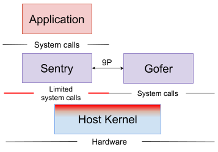

gVisor
Written by Tianyu from ZJU.
gVisorgVisor Setupdocker 安装安装须知用户权限国内镜像设置学习资料gVisor 安装Download gVisorInstall bazelBuild gVisor关于Docker的设置学习资料gVisor设置platform为kvm设置Debug参数gVisor OverviewSandboxSentrygVisor system callsSystem Call ImplementationLinux ImplementationgVisor ImplementationAdd a System Call To gVisor添加 syscall 的主要步骤gVisor 关于 redirect syscall 的原理添加调用函数名和调用号定义调用函数添加构建项测试gVisor & NginxDeploymentSyscalls from Nginx to gvisorSyscalls from gvisor to HostgVisor 的系统调用过程现在想去做两点真正的 Syscall from Sentry to Host理论上不允许调用的 syscall调用的发生点我现在又有两个想法
gVisor Setup
docker 安装
Docker的安装主要参照Docker官网的教程
注意：可能在安装的过程当中需要翻墙
在安装完成之后，运行
xxxxxxxxxx$ sudo docker run hello-world即可看到hello-world image在docker当中run的结果。
安装须知
用户权限
通过运行以下语句，可以将当前的用户添加进可以运行docker的用户当中。
xxxxxxxxxx$ sudo groupadd docker$ sudo gpasswd -a ${USER} docker$ sudo systemctl restart docker$ reboot国内镜像设置
笔者采用的是阿里云。如果翻墙速度较快的话，用docker官方的仓库也行。
学习资料
gVisor 安装
本文采用的是gVisor在Github的安装教程来安装的。如果不采用编译源码的方式，可以按照官方Doc的方法下载安装。
主要的安装步骤如下
Download gVisor
xxxxxxxxxx$ git clone https://gvisor.googlesource.com/gvisor gvisor$ cd gvisorInstall bazel
具体参照Bazel官方文档
Build gVisor
xxxxxxxxxx$ bazel build runsc$ sudo cp ./bazel-bin/runsc/linux_amd64_pure_stripped/runsc /usr/local/bin关于Docker的设置
将runsc的目录添加到Docker的配置文件当中
学习资料
目前国内关于gVisor的学习资料相对匮乏，所以主要的请参照gVisor官网文档和gVisor源码。
gVisor设置platform为kvm
安装依赖(Ubuntu)
xxxxxxxxxx$ sudo apt-get install qemu-kvm修改/etc/docker/daemon.json文件，增加参数
xxxxxxxxxx{ "runtimes": { "runsc-kvm": { "path": "/usr/local/bin/runsc", "runtimeArgs": [ "--platform=kvm" ] } }}重启docker
xxxxxxxxxx$ sudo systemctl restart docker使用gvisor在docker中运行hello-world
xxxxxxxxxx$ docker run runtime=runsc-kvm hello-world正常打出hello world等一系列信息则说明设置gVisor成功。
设置Debug参数
若要启用调试和系统调用的日志记录，将下面的runtimeArgs添加到Docker配置(/etc/docker/daemon.json)
xxxxxxxxxx{ "runtimes": { "runsc-kvm": { "path": "/usr/local/bin/runsc", "runtimeArgs": [ "--platform=kvm", "--debug-log=/tmp/runsc/", "--debug", "--strace" ] } }}更多的信息请见官方关于gVisor Debugging的文档。
gVisor Overview
gVisor是一个用Go编写的user-space kernel，它实现了很大一部分的Linux系统调用接口。 它在运行的应用程序和主机操作系统之间提供了额外的隔离层。
gVisor包含一个名为
runsc的Open Container Initiative（OCI）runtime，可以轻松使用现有的容器工具。runscruntime与Docker和Kubernetes集成，使得运行沙盒化(sandboxed)容器变得简单。
与现有的sandbox技术相比，gVisor采用了独特的容器沙盒化(sandboxing)方法，并进行了一系列不同的技术权衡，从而为容器安全领域提供了新的工具和思路。
更多介绍参考官方Doc。还有相关的架构(Architecture)介绍参考此处。
Sandbox
gVisor 当中有许多重要的概念，本文不能一一尽述，就介绍几个相关的最为重要的部分。
gVisor sandbox 在运行的时候包含了许多进程，这些进程共同组成一个共享环境，在其中可以运行一个或多个容器。
每个 sandbox 都有其独立的实例(instance)
- Sentry，运行容器的 user space kernel，负责直接和 APP 交互，它拦截并响应来自于 APP 的系统调用
- Gofer，为容器提供文件系统的访问
具体的结构如下图所示

本文之后的内容会重点放在 APP 与 Sentry 之间的 system calls 以及 gVisor sandbox 和 Host Kernel 之间的 system calls 上。
Sentry
Sentry 是 gVisor 的最大的组件。 它可以被认为是一个 user-space OS kernel。 Sentry 实现了不受信任的应用程序(APP)所需的所有内核功能。 它实现了所有受支持的系统调用，信号传递，内存管理和页面错误逻辑，线程模型等。
当不受信任的应用程序(APP)进行系统调用时，当前使用的平台(Platform)会将调用重定向到 Sentry，后者将执行必要的工作来为其提供服务。 值得注意的是，Sentry 不会简单地将系统调用传递给主机内核。 作为用户空间应用程序，Sentry将进行一些主机系统调用以支持其操作，但它不允许应用程序直接控制它所进行的系统调用。事实上，在 kvm platform 下，sentry 不会把未实现的 system call 传递给主机内核，而是简单的报错。
超出sandbox（不是内部/proc文件，管道等）的文件系统操作将发送到Gofer。
gVisor system calls
gVisor 的系统调用分成两个部分来讲述，第一部分 System Call Implementation 介绍了 Linux 如何实现系统调用，以及 gVisor 是如何仿照 Linux 来做的。第二部分则利用 gVisor 设计实现系统调用的原理，自己设计并添加了一个新的系统调用，借此来熟悉 gVisor 具体的系统调用流程。
System Call Implementation
Linux Implementation
首先需要搞清楚的一点是，Linux 是怎么实现系统调用的。Anatomy of a system call, part 1 介绍了Linux实现系统调用的具体流程。
系统调用和普通的函数不同，被调用的代码放在内核里面。当 APP 进行系统调用的时候，需要有特定的指令，使得处理器进行ring 0(特权模式)的转换。同时系统调用不是由地址来标识，而是由系统调用号来标识的。
上文提到的那篇文章，以 read() 系统调用为例详细介绍了 Linux kernel 的的系统调用流程。这里有个重点需要指出，system_call 系统调用处理函数的地址写入寄存器 MSR_LSTAR (0xc0000082)，这是用于处理SYSCALL指令的x86_64特定于模型的寄存器，不同的硬件设备是不一样的。
系统调用的简要流程如下
user-space 的用户进程将系统调用号放入寄存器 RAX，然后其他参数放到具体的寄存器，之后运行 SYSCALL 指令。硬件完成切换 Ring 0，调用 MSR_LSTAR 寄存器指向地址的代码 system_call，寄存器值(之前的参数值)放入kernel Stack，根据 RAX 获取函数指针，然后最后调用具体的系统调用实现函数。这写过程都是由硬件完成的，而 system_call 的地址是在系统调用初始化的时候就放入寄存器当中的。
gVisor Implementation
根据 gVisor 论坛当中的帖子，在 KVM 平台下，系统调用的拦截和普通的OS类似。当在 guest mode 运行程序的时候，KVM 把上文提到的 MSR_LSTAR 寄存器设置为一个 system call handler，每次程序发生系统调用或者是 sentry 自己进行系统调用的时候，这个 sysenter() 函数都会执行。详细的在下一节当中有介绍。
Add a System Call To gVisor
以下实验请在 release-20190806.1 版本上实践，不同的 gVisor 版本对于 syscall 的实现方式会有偏差。
添加 syscall 的主要步骤
参考我在gvisor论坛上面的Topic，在gVisor中添加一个系统调用主要分三步
- 在
pkg/sentry/syscalls/linux/linux64.go文件当中的var AMD64变量当中添加调用函数名和系统调用号 - 在
pkg/sentry/syscalls/linux目录下添加×××.go文件，在这个文件里定义调用函数 - 在
pkg/sentry/syscalls/linux/BUILD文件当中添加构建项
以上三步完成之后，重新编译gvisor就可以在Application当中进行系统调用(按照系统调用号)，调用我们刚刚定义的函数。
gVisor 关于 redirect syscall 的原理
Anatomy of a system call, part 1 介绍了Linux实现系统调用的具体流程。
和Linux实现系统调用类似，gVisor 也存在着这样的机制。
gVisor 在 sentry 当中实现系统调用，具体的架构如下(来自于申文博老师的runc, gvisor, and kata container)
xxxxxxxxxxApplication --> Guest Ring 3----------------Sentry (ring0) --> Guest Ring 0GUEST-------------------------------------------HOSTSentry (kvm) --> Host Ring 3-------------Host kernel --> Host Ring 0
Sentry 在初始化的时候，将系统调用函数 sysenter() 放入 MSR_LSTAR 寄存器当中，当 Application 发生系统调用的时候，机器会直接陷入 trap，然后自动调用存放在 MSR_LSTAR 寄存器当中的函数，即 sysenter()。
每次 Application 发生系统调用或者是 sentry 自己进行系统调用的时候，这个 sysenter() 函数都会执行。这个函数是用汇编代码来写的，主要做的事情就是在 context switch 的过程当中保存寄存器的值，然后根据 kernel space 里面的 syscall table 来进行跳转到具体的系统调用实现函数中去。
sentry 当中的 kernel space 其实在 Host 看来是 user space 当中分配给 sentry 的其中一部分。
当添加一个系统调用的时候，需要做的就是编写调用函数，同时将系统调用函数名和调用号都添加到 syscall table 当中去。
添加调用函数名和调用号
在pkg/sentry/syscalls/linux/linux64.go文件当中的var AMD64变量当中添加调用函数名和系统调用号。
上文讲到的 syscall table 定义在 var AMD64 变量当中的 Table 属性下。
var AMD64 = &kernel.SyscallTable{ OS: abi.Linux, Arch: arch.AMD64, Version: kernel.Version{ Sysname: "Linux", Release: "4.4", Version: "#1 SMP Sun Jan 10 15:06:54 PST 2016", }, AuditNumber: _AUDIT_ARCH_X86_64, Table: map[uintptr]kernel.SyscallFn{ 0: Read, 1: Write, 2: Open, 3: Close, 4: Stat, // ... 400: Square, } // ...}添加新的系统调用的时候，形式应该和上述的调用一样，以调用号: 调用函数名的形式，如上述代码中的400: Square。
这一步相当于在调用表当中注册了新的调用函数。接下来就是定义这个新添加的调用函数。
定义调用函数
定义调用函数的目录是确定的，在 pkg/sentry/syscalls/linux。
在该目录新建一个.go文件，这里以之前添加的 Square 调用函数为例，在目录下新建一个名为sys_square.go的文件
xpackage linuximport ( "gvisor.googlesource.com/gvisor/pkg/sentry/arch" "gvisor.googlesource.com/gvisor/pkg/sentry/kernel")// Square returns the square of arg[0]func Square(t *kernel.Task, args arch.SyscallArguments) (uintptr, *kernel.SyscallControl, error) { num := args[0].Int() num = num * num return uintptr(num), nil, nil}这里的Square()函数接受一个参数并返回它的平方。
注意这里的 package 和 import 部分必须一致。函数名要和之前注册的相对应。
添加构建项
打开pkg/sentry/syscalls/linux/BUILD文件，添加新建的sys_square.go文件。
package(licenses = ["notice"])load("//tools/go_stateify:defs.bzl", "go_library")go_library(name = "linux",srcs = ["error.go","flags.go","linux64.go","timespec.go",..."sys_square.go" <-------------- new],...
重新 build gVisor。
测试
参考这篇文章，使用 docker 来构建 go 语言环境，生成可执行文件。
xxxxxxxxxx// test-square.gopackage mainimport ( "fmt" "os" "syscall")const SQUARE = 400 func main() { r1, _, errNo := syscall.RawSyscall(SQUARE, 5, 0, 0) if errNo != 0 { fmt.Fprintf(os.Stderr, "ERROR: %d\n", errNo) os.Exit(1) } fmt.Printf("%d\n", r1) } 这个文件通过syscall.RawSyscall(SQUARE, 5, 0, 0)利用系统调用号来进行系统调用，这里用到的参数仅仅为第一个5。
将该程序编译之后得到可执行文件test-square，在 gVisor 当中运行它，得到如下输出
xxxxxxxxxxroot@91071194a4c4:/code# lstest-square test-square.goroot@91071194a4c4:/code# ./test-square 25输出为5的平方25。
gVisor & Nginx
这节主要介绍在gVisor上运行Nginx，并研究在运行Nginx的时候，sentry和Nginx，gVisor sandbox和Host之间的system call的调用情况。
主要的步骤如下
- 在本地的 docker上部署 Nginx，使用 gVisor 运行成功
- 寻找 Nginx 向 gVisor 发出的 system calls
- 寻找 gVisor 向 Host Kernel 发出的 system calls
Deployment
参考这篇文章, 可以从 Docker Hub下载 Nginx 镜像并用 docker run 命令来运行它。
xxxxxxxxxx$ docker pull nginx
运用 docker pull 命令来下载官方镜像
xxxxxxxxxx$ docker run --name nginx-test -p 8081:80 -d nginx
这里有几个参数需要说明：
- nginx-test 是容器的名字
- 8081 是容器对外的端口，用
-p参数将本地的 8081 端口映射到容器内部的 80 端口 - 因为使用了
-p参数，这个容器运行在后台
在运行了上述命令之后，打开浏览器，在地址栏处输入“127.0.0.1:8081”，回车后可以看到 Nginx 的”welcome page“，说明成功的在 docker 上运行了 Nginx。
在这之后，新建一些文件来和 Nginx 容器来做一些映射。
xxxxxxxxxx$ mkdir -p ~/nginx/www ~/nginx/logs ~/nginx/conf$ docker cp 6dd4380ba708:/etc/nginx/nginx.conf ~/nginx/conf
这里的 6dd4380ba708 是运行的 Nginx 容器的ID，我们可以用 docker ps 来获取。
www是 Nginx 的文件目录logs用来存放日志文件的目录- 文件
conf用来映射 Nginx 的配置文件
最后添加 index.html 文件到 www 目录下, 该文件将会是访问该服务器时的主页。
xxxxxxxxxx<!DOCTYPE html><html><head><meta charset="utf-8"><title>zty's web</title></head><body><h1>我的第一个标题</h1><p>我的第一个段落。</p></body></html>
运行 docker run 命令来启动 Nginx 容器，同时添加 --runtime=runsc-kvm 以 gVisor sandbox 来运行容器，并用 -v 参数来映射文件。
xxxxxxxxxxdocker run --runtime=runsc-kvm -d -p 8082:80 --name nginx-web --rm -v ~/nginx/www:/usr/share/nginx/html -v ~/nginx/conf/nginx.conf:/etc/nginx/nginx.conf -v ~/nginx/logs:/var/log/nginx nginx再次访问 127.0.0.1:8082 网址，即可浏览到刚刚编写的 index.html 网页。
Syscalls from Nginx to gvisor
为了统计所有从 Nginx 产生的 System calls，需要先明确具体的系统调用流程。这里的流程指的是源代码当中的函数调用关系。因此先观察日志文件。
上文提到在 docker 配置文件当中添加了 debug 等一系列参数，因此当运行 Nginx 容器的时候，在之前设置的目录下会有一系列的日志文件产生，这些日志文件当中以 .boot 结尾的就是 sentry 进程对应的日志文件。这里有关于 .create 和 .boot 的相关研究结果可供参考。
在 .boot 文件当中，有所有来自于 Nginx 的系统调用的记录，选取一个如下所示
xxxxxxxxxxnginx E read(0x3 /lib/x86_64-linux-gnu/libdl-2.28.so, 0x7f2d2c4640d8, 0x340)
这里显示 Nginx 调用了 read() system call。
在已知 Nginx 会调用 read() system call 的条件下，结合之前讲述的系统调用具体实现，可以找到实现 read() 系统调用函数的位置，添加一段代码，将运行到该处时的 stack trace 打印出来。
因此在pkg/sentry/syscalls/linux/sys_read.go这个文件里面修改 gvisor 实现的 read 系统调用，增加 print stack trace 代码
xxxxxxxxxxfunc Read(t *kernel.Task, args arch.SyscallArguments) (uintptr, *kernel.SyscallControl, error) { // add by zty in oder to watch stack trace db.PrintStack()并在文件的开头修改 import 信息
xxxxxxxxxximport( ... // added by zty to watch stack trace db "runtime/debug")重新编译并运行 Nginx 之后，在日志当中的输出如下
xgoroutine 40 [running]:runtime/debug.Stack(0xd0853a, 0xd, 0x0)GOROOT/src/runtime/debug/stack.go:24 +0x9druntime/debug.PrintStack()GOROOT/src/runtime/debug/stack.go:16 +0x22gvisor.googlesource.com/gvisor/pkg/sentry/syscalls/linux.Read(...)pkg/sentry/syscalls/linux/sys_read.go:49 +0x7egvisor.googlesource.com/gvisor/pkg/sentry/kernel.(*Task).executeSyscall(...)pkg/sentry/kernel/task_syscall.go:165 +0x10agvisor.googlesource.com/gvisor/pkg/sentry/kernel.(*Task).doSyscallInvoke(...)pkg/sentry/kernel/task_syscall.go:283 +0x69gvisor.googlesource.com/gvisor/pkg/sentry/kernel.(*Task).doSyscallEnter(...)pkg/sentry/kernel/task_syscall.go:244 +0x96gvisor.googlesource.com/gvisor/pkg/sentry/kernel.(*Task).doSyscall(...)pkg/sentry/kernel/task_syscall.go:219 +0x13dgvisor.googlesource.com/gvisor/pkg/sentry/kernel.(*runApp).execute(...)pkg/sentry/kernel/task_run.go:219 +0xe09gvisor.googlesource.com/gvisor/pkg/sentry/kernel.(*Task).run(...)pkg/sentry/kernel/task_run.go:91 +0x194created by gvisor.googlesource.com/gvisor/pkg/sentry/kernel.(*Task).Startpkg/sentry/kernel/task_start.go:286 +0xfe
定位到 pkg/sentry/kernel/task_syscall.go 文件，找到了 doSyscall() 函数
x
// doSyscall is the entry point for an invocation of a system call specified by// the current state of t's registers.//// The syscall path is very hot; avoid defer.func (t *Task) doSyscall() taskRunState { sysno := t.Arch().SyscallNo() args := t.Arch().SyscallArgs() // add by zty in oder to get syscall number log.Infof("Syscall %d: called from APP", sysno)在这个函数当中加入一行日志输出的代码，即上述的 log.Infof(...)，同时在该文件的 import 部分添加 "gvisor.dev/gvisor/pkg/log"，保证编译的时候不会出错。
重新编译 gVisor，并运行 Nginx 之后，就可以获得有上述输出的 .boot 日志文件。笔者通过如下的 python 代码获取了文件当中的所有 system call number。
xxxxxxxxxximport repath = '/tmp/runsc/runsc.log.20190817-222714.915316.boot'syscall_num_set = set()with open(path) as f: for line in f: if 'from APP' in line: #print(re.findall(r"", line)) temp_str = line[line.find("Syscall"):] #print(re.findall(r"\d+", temp_str)) syscall_num_set.add(re.findall(r"\d+", temp_str)[0])print(len(syscall_num_set))syscall_num_list = [int(i) for i in syscall_num_set]syscall_num_list.sort()print(syscall_num_list)xxxxxxxxxx$ python3 collect_syscall.py 54[0, 1, 3, 4, 5, 8, 9, 10, 11, 12, 13, 14, 16, 17, 18, 20, 21, 33, 39, 41, 42, 45, 49, 50, 53, 54, 56, 63, 72, 83, 92, 99, 105, 106, 107, 110, 116, 130, 157, 158, 186, 202, 206, 213, 217, 218, 228, 232, 233, 257, 273, 288, 290, 302]将这些 system calls 可视化的结果如下。

Syscalls from gvisor to Host
两个思路
- 一个是从 gVisor 的系统调用过程入手，找到 gvisor 向 kernel 发出调用请求的入口
- 一个是将 gVisor 视为一个普通的进程，观察该进程的所有 syscall
gVisor 的系统调用过程
前文在 Syscalls from Nginx to gvisor 这一节里面，涉及到了 gVisor 在进行系统调用时的一系列操作，那么现在深入研究这一部分，究竟是在哪一部分，哪个环节里面，gVisor 向 host kernel 发出了 syscall 调用请求。
再放一遍 stack trace (simplified)
xxxxxxxxxxgvisor/pkg/sentry/syscalls/linux.Read()pkg/sentry/syscalls/linux/sys_read.go:49 +0x57gvisor/pkg/sentry/kernel.(*Task).executeSyscall()pkg/sentry/kernel/task_syscall.go:168 +0x10agvisor/pkg/sentry/kernel.(*Task).doSyscallInvoke()pkg/sentry/kernel/task_syscall.go:289 +0x69gvisor/pkg/sentry/kernel.()pkg/sentry/kernel/task_syscall.go:250 +0x96gvisor/pkg/sentry/kernel.(*Task).doSyscall()pkg/sentry/kernel/task_syscall.go:225 +0x13dgvisor/pkg/sentry/kernel.(*runApp).execute()pkg/sentry/kernel/task_run.go:219 +0xe09gvisor/pkg/sentry/kernel.(*Task).run()pkg/sentry/kernel/task_run.go:91 +0x194created by gvisor/pkg/sentry/kernel.(*Task).Startpkg/sentry/kernel/task_start.go:286 +0xfe
关于第二个思路，我采用了 strace 命令来追踪 sentry 的系统调用，结果碰到了一些问题，一个是当 strace docker run --runtime=runsc-kvm .... 的时候，由于docker的一些机制，导致我追踪到的并不是真正的sentry进程，若是使用 runsc run 命令直接启动容器的时候，又会因为 config.json 文件的编写以及一些参数问题，会有访问权限不对的问题出现，和老师商量之后，还是决定从第一种方法入手。
原因有很多个，但较为重要的目标现在明确了，就是在 nginx 正常运行的时候，我们去关注他的系统调用，到底有什么。即在实际工作场景当中，最常见的状态就是 nginx 已经启动，这个时候的 syscall 使我们需要注意的。
我在 gVisor 论坛上提出了相关问题，想从 sentry 和 host OS 之间的 seccomp 入手，找到所有从 sentry 发往 Host 的 syscall。通过回复我了解到 sentry 和 Host 之间的 seccomp，是在gvisor/runsc/boot/filter/filter.go这个文件当中定义的，现在来仔细研究一下这个文件。
首先是注释
xxxxxxxxxx// Package filter defines all syscalls the sandbox is allowed to make// to the host, and installs seccomp filters to prevent prohibited// syscalls in case it's compromised.gvisor/runsc/boot/filter 这个包定义了所有允许从sentry到host的syscall，并且 install 了拦截禁用syscall的过滤器。
xxxxxxxxxx// Install installs seccomp filters for based on the given platform.func Install(opt Options) error {Install函数首先check了所有相关参数，补充了所有允许的syscall，然后调用了seccomp.Install() 函数(pkg/seccomp/seccomp.go)来进行 filter 的 install。而在这个函数里面，真正install的代码是
xxxxxxxxxx // Perform the actual installation. if errno := SetFilter(instrs); errno != 0 { return fmt.Errorf("Failed to set filter: %v", errno) }转到 SetFilter() 函数的定义位置
xxxxxxxxxx// SetFilter installs the given BPF program.//// This is safe to call from an afterFork context.////go:nosplitfunc SetFilter(instrs []linux.BPFInstruction) syscall.Errno { // PR_SET_NO_NEW_PRIVS is required in order to enable seccomp. See seccomp(2) for details. if _, _, errno := syscall.RawSyscall(syscall.SYS_PRCTL, linux.PR_SET_NO_NEW_PRIVS, 1, 0); errno != 0 { return errno } sockProg := sockFprog{ Len: uint16(len(instrs)), Filter: (*linux.BPFInstruction)(unsafe.Pointer(&instrs[0])), } return seccomp(linux.SECCOMP_SET_MODE_FILTER, linux.SECCOMP_FILTER_FLAG_TSYNC, unsafe.Pointer(&sockProg))}参考这篇文章，关于利用 prctl 系统调用来实现 seccomp 功能。这里的 setFilter() 是 sockFprog 类型的 sockProg 变量，同时设置了该进程不能拥有 root 权限(PR_SET_NO_NEW_PRIVS)再调用了 seccomp 函数
xxxxxxxxxx// seccomp calls seccomp(2). This is safe to call from an afterFork context.////go:nosplitfunc seccomp(op, flags uint32, ptr unsafe.Pointer) syscall.Errno { if _, _, errno := syscall.RawSyscall(SYS_SECCOMP, uintptr(op), uintptr(flags), uintptr(ptr)); errno != 0 { return errno } return 0}seccomp() 进行了系统调用，将之前组合好的 sockFprog 作为参数，实现了 seccomp 的功能。
和老师讨论了一下，先把目标集中在sentry不能实现的syscall上面，即application(Nginx)向sentry发出了syscall，但这个syscall并没有被sentry implement，这个时候会发生一个函数的调用
xxxxxxxxxx//gvisor/blob/master/pkg/sentry/syscalls/linux/linux64.go Missing: func(t *kernel.Task, sysno uintptr, args arch.SyscallArguments) (uintptr, error) { t.Kernel().EmitUnimplementedEvent(t) return 0, syserror.ENOSYS },在sentry执行applicaition的syscall的时候，最终会进入到executeSyscall()函数中
xxxxxxxxxx// pkg/sentry/kernel/task_syscall.go:executeSyscall() fn := s.Lookup(sysno) if fn != nil { // Call our syscall implementation. rval, ctrl, err = fn(t, args) } else { // Use the missing function if not found. rval, err = t.SyscallTable().Missing(t, sysno, args) }当SyscallTable(定义在pkg/sentry/syscalls/linux/linux64.go)当中没有对应的syscall，即application的syscall是unimplemented，会call上文给出的Missing()函数。
那么如果要收集Nginx所有发给sentry但最终sentry并未实现的syscall，只要在 Missing() 函数当中添加日志输出即可。以防万一，先查看一下该函数调用的 Kernel().EmitUnimplementedEvent()函数。
xxxxxxxxxx// pkg/sentry/kernel/kernel.go//// EmitUnimplementedEvent emits an UnimplementedSyscall event via the event// channel.func (k *Kernel) EmitUnimplementedEvent(ctx context.Context) { t := TaskFromContext(ctx) eventchannel.Emit(&uspb.UnimplementedSyscall{ Tid: int32(t.ThreadID()), Registers: t.Arch().StateData().Proto(), })}然后锁定 eventchannel.Emit
xxxxxxxxxx// runsc/boot/compat.go//// Emit implements eventchannel.Emitter.func (c *compatEmitter) Emit(msg proto.Message) (bool, error) { switch m := msg.(type) { case *spb.UnimplementedSyscall: c.emitUnimplementedSyscall(m) case *ucspb.UncaughtSignal: c.emitUncaughtSignal(m) } return false, nil}在Missing Syscall的handle路径上面加入print syscall number之后，结果并没有发现有输出，那么至少在运行基本的Nginx功能时，没有相关的sentry未implement的syscall。
现在想去做两点
- 第一是参考这个回答对runtime的sentry去看看具体做了哪些系统调用，对比运行其他的image有何不同
- 第二是直接在gvisor里头调用syscall(没有被实现的)，看看具体的操作是什么，是不是真的有传递到Host里面
对于sentry在runtime的时候到底做了什么syscall，参考之前的论坛回答，我编写了以下脚本
xxxxxxxxxxCID=$(docker run --runtime=runsc-kvm -d -p 8082:80 --name nginx-web --rm -v ~/dev/nginx/www:/usr/share/nginx/html -v ~/dev/nginx/conf/nginx.conf:/etc/nginx/nginx.conf -v ~/dev/nginx/logs:/var/log/nginx nginx)PID=$(docker inspect -f='{{.State.Pid}}' $CID)sudo strace -p $PID通过container ID来获取Process ID，然后用strace -p 来追踪syscall，结果如下
xxxxxxxxxxzty@onepiece:nginx$ ./strace-deploy.sh strace: Process 10603 attachedfutex(0x14c6048, FUTEX_WAIT_PRIVATE, 0, NULL) = ?+++ exited with 0 +++只有一个syscall futex()，而且还是没有返回值的那种，最后执行 docker stop 之后追踪就停止了。
所以总结来说就是在运行 Nginx 的时候，sentry 并没有发生向 Host 发出 syscall 的行为。
但上述结论是错误的。
真正的 Syscall from Sentry to Host
参考论坛关于 sentry syscall 的回答，上述命令并没有追踪到所有的线程，要加上参数 -f 来获取所有 threads 的 syscall，同时明确了 sentry 在 APP Running 的状态下不止有一个 futex syscall，但还有什么其他的 syscall 取决于具体的 APP。
If it is just sleeping or performing purely sandbox-internal operations (internal tmpfs, pipes, signals, etc), I could imagine only seeing futex plus platform-related syscalls (ptrace for ptrace, KVM ioctls for KVM).
如果没有 APP 的要求下，那 syscall 就是有限的几个。
在加上 -f 参数之后，我得到了一系列的syscall，统计出来的图表如下

总共是 29 个系统调用，同时将这些系统调用和 runsc/boot/filter/config.go 文件当中声明的系统调用作对比，发现了几个不在 allow list 里面的 syscall。
和导师交流了之后，再次确认是不是的确只有29个。
结果发现，做了三次，三次的结果不一致，第一次29个，第二次27个，第三次33个。3
理论上不允许调用的 syscall
| syscall name | number | times |
|---|---|---|
| accept | 43 | 7 |
| rt_sigtimedwait | 128 | 1 |
回到源代码 check
xxxxxxxxxx// runsc/boot/filter/config.go// kvmFilters returns syscalls made exclusively by the KVM platform.func kvmFilters() seccomp.SyscallRules { return seccomp.SyscallRules{ syscall.SYS_ARCH_PRCTL: {}, syscall.SYS_IOCTL: {}, syscall.SYS_MMAP: {}, syscall.SYS_RT_SIGSUSPEND: {}, syscall.SYS_RT_SIGTIMEDWAIT: {}, 0xffffffffffffffff: {}, // KVM uses syscall -1 to transition to host. }}在这里加入到允许的syscall当中去了，所以 rt_sigtimedwait 这个syscall是被allow的。
同时需要注意一点，就是不同的platform会有不同的额外的syscall allow。
对于 syscall accept 也有相应的 allow
xxxxxxxxxx// runsc/boot/filter/config.gofunc controlServerFilters(fd int) seccomp.SyscallRules { return seccomp.SyscallRules{ syscall.SYS_ACCEPT: []seccomp.Rule{ { seccomp.AllowValue(fd), }, }, // ...}因此所有的system call，在本次查找到的，全部是被允许的。
调用的发生点
为何上述syscall会发生呢？在 gvisor 的源码当中，有许多处调用 go 语言的 syscall 包来实现实现对于系统调用的call，如最经典的 syscall.Syscall() 形式，通过运行以下命令，可以获取到所有包含 syscall.xxxx()形式的调用点
xxxxxxxxxx$ grep -r "syscall\.\w*(" gvisor/总共546处。
我现在又有两个想法
- 首先看 APP 向 sentry 发的 syscall 是怎么实现的，在实现过程当中有哪些 syscall 是 sentry 需要通过向 host 发 syscall 来做的
- 其次观察在上述
grep命令当中，所有的系统调用，是不是都是 seccomp 允许的。
上次和老师交流，并不是所有被允许的 syscall 都是必须的，因此能够找到冗余的 syscall 是这次研究的关键，或者说存在一些会 crash 的路径，也是值得思考的问题。
第一个想法去尝试了，发现很困难，因为许多函数都是用的 interface 函数，精确的找到定义很困难，也非常的复杂。
比如找 Read() 这个 syscall，它在 pkg/sentry/syscalls/linux/sys_read.go 文件当中被定义，但是这个函数其实调用的是 readv() 函数，转到同文件下的 read()，逐步逐步深入到可能涉及系统调用的函数里面去，就到了 pkg/sentry/fs/file_operations.go 下面的 FileOperations interface 中的 Read() 函数。而这个函数具体是怎么调用的，要看调用者的属性，而且查找该函数的 implementation 很难。
第二个想法，需要先锁定grep出来的 syscall 调用入口，具体是进行什么syscall。
开始统计，以 idea/syscall.txt这个文件为准。不同 gvisor 版本可能会有差别。
| file | function | syscall |
|---|---|---|
| runsc/container/container_test.go | syscall.Syscall6(syscall.SYS_WAITID | SYS_WAITID |
| runsc/container/container_test.go | syscall.Stat( | SYS_FSTATAT64 |
| runsc/container/container_test.go | syscall.Mount( | SYS_MOUNT |
| gvisor/runsc/container/multi_container_test.go | syscall.Wait4( | SYS_WAIT4 |
| syscall.Kill( | SYS_KILL | |
对于第二个问题，我做了一个实验
通过阅读代码，我了解到第68-71号系统调用均没有被implement，因此编写一个会进行这些系统调用的c程序，然后在gvisor里面运行它，就可以知道这些没有被implement的syscall有没有传递到Host Kernel并实现。
xxxxxxxxxx// copy from https://blog.csdn.net/guoping16/article/details/6584024struct msgbuf{ long mtype; char mtext[TEXT_SIZE];};int main(int argc, char **argv){ int msqid; struct msqid_ds info; struct msgbuf buf; struct msgbuf buf1; int flag; int sendlength, recvlength; msqid = msgget( IPC_PRIVATE, 0666 ); if ( msqid < 0 ) { perror("get ipc_id error"); return -1; } buf.mtype = 1; strcpy(buf.mtext, "happy new year!"); sendlength = sizeof(struct msgbuf) - sizeof(long); flag = msgsnd( msqid, &buf, sendlength , 0 ); if ( flag < 0 ) { perror("send message error"); return -1; } buf.mtype = 3; strcpy(buf.mtext, "good bye!"); sendlength = sizeof(struct msgbuf) - sizeof(long); flag = msgsnd( msqid, &buf, sendlength , 0 ); if ( flag < 0 ) { perror("send message error"); return -1; } flag = msgctl( msqid, IPC_STAT, &info ); if ( flag < 0 ) { perror("get message status error"); return -1; } printf("uid:%d, gid = %d, cuid = %d, cgid= %d\n", info.msg_perm.uid, info.msg_perm.gid, info.msg_perm.cuid, info.msg_perm.cgid); printf("read-write:%03o, qnum = %lu, qbytes= %lu\n", info.msg_perm.mode&0777, info.msg_qnum, info.msg_qbytes); system("ipcs -q"); recvlength = sizeof(struct msgbuf) - sizeof(long); memset(&buf1, 0x00, sizeof(struct msgbuf)); flag = msgrcv( msqid, &buf1, recvlength ,3,0 ); if ( flag < 0 ) { perror("recv message error"); return -1; } printf("type=%d, message=%s\n", buf1.mtype, buf1.mtext); flag = msgctl( msqid, IPC_RMID,NULL); if ( flag < 0 ) { perror("rm message queue error"); return -1; } system("ipcs -q"); return 0;}在终端上执行以下命令
xxxxxxxxxxzty@onepiece:cfile$ gcc -o msgctl msgctl.c zty@onepiece:cfile$ ./msgctl uid:1000, gid = 1000, cuid = 1000, cgid= 1000read-write:666, qnum = 2, qbytes= 16384------ Message Queues --------key msqid owner perms used-bytes messages 0x00000000 0 zty 666 1024 2 type=3, message=good bye!------ Message Queues --------key msqid owner perms used-bytes messages zty@onepiece:cfile$ docker run --runtime=runsc-kvm --rm -v /home/zty/dev/cfile/:/cfile ubuntu /cfile/msgctlget ipc_id error: Function not implemented结果Log文件输出如图
xxxxxxxxxxI0826 06:40:01.315758 1 x:0] Syscall 68: catch unimplementedI0826 06:40:01.315795 1 x:0] Unsupported syscall: msgget, regs: rax:18446744073709551578 rcx:140116902426199 rdx:140228478938712 rsi:438 rsp:140228478937240 rbp:140228478938464 r8:140116905348480 r9:140116905348480 r11:582 r12:94430395602848 r13:140228478938688 rip:140116902426199 rflags:582 orig_rax:68 cs:51 ss:43 fs_base:140116909241536I0826 06:40:01.316103 1 x:0] [ 1] msgctl X msgget(0x0, 0x1b6) = 0x0 errno=38 (function not implemented) (336.985µs)
事实证明，在gvisor-kvm模式下，没有被implement的syscall，并不会传递到Host并实现。
The sentry returns ENOSYS to the application if it receives a system call it cannot handle. Specifically, this handler is called. (N.B. EmitUnimplementedEvent is just for logging calls we did not handle. It has no application-level effect)
在论坛上 Michael Pratt 就是如上文所示这样回复我的，所以对于 sentry 不能实现的 syscall，它仅仅做的是报错(syserror.ENOSYS)。